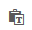

Necesidad de conexión a Internet
Para que se puedan ver los símbolos y fórmulas matemáticas es necesario la existencia de una conexión a Internet, ya que MathJax trabaja a través de Internet.
Copiar y pegar los ejemplos
Cuando copiamos texto de una página de Internet, junto con el texto que queremos se suele copiar una gran cantidad de especificaciones del formato con el que fue escrito (tipo de letra, tamaño, color, etc.), esto casi siempre interfiere con lo que deseamos hacer y en el caso de las fórmulas pueden llegar a no funcionar. Si vas a copiar y pegar código en tu propio documento de eXe te recomendamos que no lo hagas directamente, sino utilizando el botón que hay en la barra del editor que permite alternar entre pegado con y sin formato. De forma alternativa puedes usar la combinación de teclas CONTROL + MAYÚS. + V
Fórmulas interactivas
Las fórmulas que aparecen en este documento y las que tú mismo/a crearás son interactivas ya que pulsando el botón derecho del ratón sobre ella puedes acceder a varias opciones, entre ellas el código que se utiliza para crearlas.